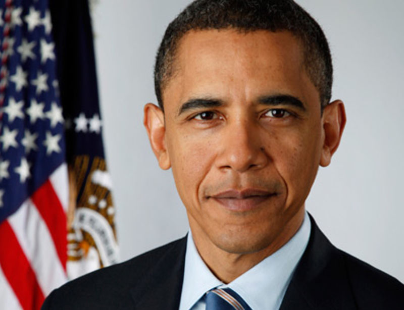
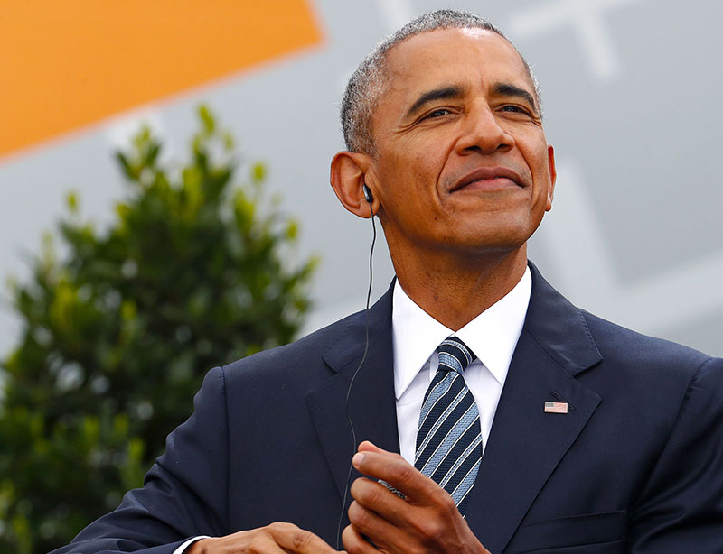
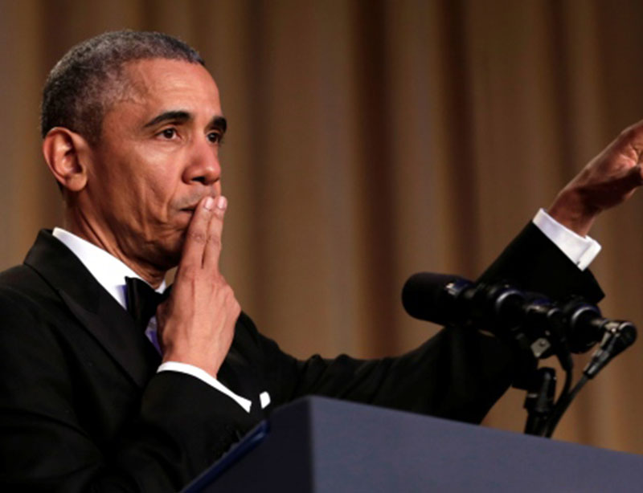
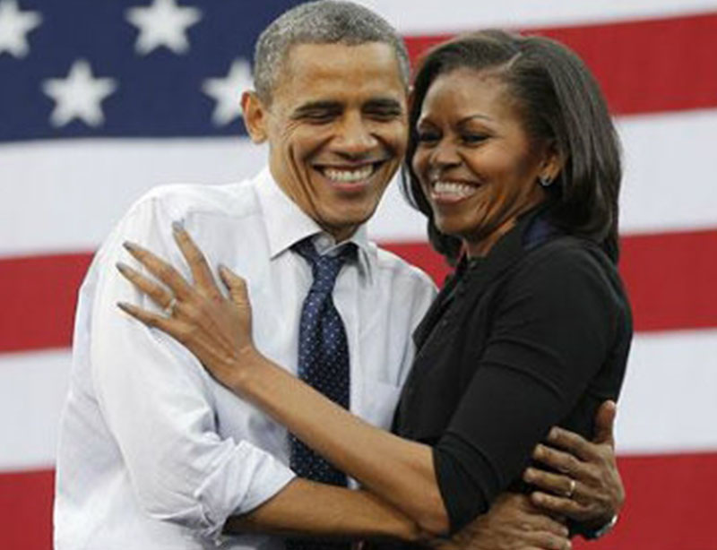

<!DOCTYPE html>
<html lang="en" class="no-js">
	<head>
		<meta charset="UTF-8" />
		<meta http-equiv="X-UA-Compatible" content="IE=edge,chrome=1">
		<meta name="viewport" content="width=device-width, initial-scale=1.0">
		<title>Blueprint: On Scroll Effect Layout</title>
		<meta name="description" content="Blueprint: On Scroll Effect Layout" />
		<meta name="keywords" content="on scroll, effect, slide in, layout, template, transition, javascript" />
		<meta name="author" content="Codrops" />
		<link rel="shortcut icon" href="../favicon.ico">
		<link rel="stylesheet" type="text/css" href="css/demo.css" />
		<link rel="stylesheet" type="text/css" href="css/component.css" />
		<script src="js/modernizr.custom.js"></script>
	</head>
	<body>
		<div class="container">
			<header class="clearfix">
				<span>Thursday, february 1st <span class="bp-icon bp-icon-about" data-content="The Blueprints are a collection of basic and minimal website concepts, components, plugins and layouts with minimal style for easy adaption and usage, or simply for inspiration."></span></span>
				<h1>Barack Obama</h1>
			</header>
			<div id="cbp-so-scroller" class="cbp-so-scroller">
				<section class="cbp-so-section">
					<article class="cbp-so-side cbp-so-side-left">
						<h2>President Barack Obama</h2>
						<p>Barack H. Obama is the 44th President of the United States.

Few presidents have walked a more improbable path to the White House. Born in Hawaii to a mother from Kansas and a father from Kenya, Obama was raised with help from his grandparents, whose generosity of spirit reflected their Midwestern roots. The homespun values they instilled in him, paired with his innate sense of optimism, compelled Obama to devote his life to giving every child, regardless of his or her background, the same chance America gave him.</p>
					</article>
					<figure class="cbp-so-side cbp-so-side-right">
						
					</figure>
				</section>
				<section class="cbp-so-section">
					<figure class="cbp-so-side cbp-so-side-left">
						
					</figure>
					<article class="cbp-so-side cbp-so-side-right">
						<h2>Biography</h2>
						<p>After working his way through college with the help of scholarships and student loans, Obama moved to Chicago, where he worked with a group of churches to help rebuild communities devastated by the closure of local steel plants. That experience honed his belief in the power of uniting ordinary people around a politics of purpose, in the hard work of citizenship, to bring about positive change. In law school, he became the first African-American president of the Harvard Law Review, then he returned to Illinois to teach constitutional law at the University of Chicago and begin a career in public service, winning seats in the Illinois State Senate and the United States Senate.</p>
					</article>
				</section>
				<section class="cbp-so-section">
					<article class="cbp-so-side cbp-so-side-left">
						<h2>The Election</h2>
						<p>On November 4, 2008, Barack Obama was elected the 44th President of the United States, winning more votes than any candidate in history. He took office at a moment of crisis unlike any America had seen in decades – a nation at war, a planet in peril, the American Dream itself threatened by the worst economic calamity since the Great Depression. And yet, despite all manner of political obstruction, Obama’s leadership helped rescue the economy, revitalize the American auto industry, reform the health care system to cover another twenty million Americans, and put the country on a firm course to a clean energy future – all while overseeing the longest stretch of job creation in American history. On the world stage, Obama’s belief in America’s indispensable leadership and strong, principled diplomacy helped wind down the wars in Iraq and Afghanistan, decimate al Qaeda and eliminate the world’s most wanted terrorists, shut down Iran’s nuclear weapons program, open up a new chapter with the people of Cuba, and unite humanity in coordinated action to combat a changing climate.

</p>
					</article>
					<figure class="cbp-so-side cbp-so-side-right">
						
					</figure>
				</section>
				<section class="cbp-so-section">
					<figure class="cbp-so-side cbp-so-side-left">
						
					</figure>
					<article class="cbp-so-side cbp-so-side-right">
						<h2>Popularity</h2>
						<p>In times of great challenge and change, President Obama’s leadership ushered in a stronger economy, a more equal society, a nation more secure at home and more respected around the world. The Obama years were ones in which more people not only began to see themselves in the changing face of America, but to see America the way he always has – as the only place on Earth where so many of our stories could even be possible.

Barack Obama and his wife, Michelle, are the proud parents of two daughters, Malia and Sasha.</p>
					</article>
				</section>
				<section class="cbp-so-section">
					<article class="cbp-so-side cbp-so-side-left">
						<h2>Michelle Obama</h2>
						<p>Michelle LaVaughn Robinson Obama is a lawyer, writer, and the wife of the 44th President of the United States, Barack Obama. She was the first African-American First Lady of the United States. Through her four main initiatives, she has become a role model for women and an advocate for healthy families, service members and their families, higher education, and international adolescent girls education.</p>
					</article>
					<figure class="cbp-so-side cbp-so-side-right">
						
					</figure>
				</section>
				<section class="cbp-so-section">
					<figure class="cbp-so-side cbp-so-side-left">
						
					</figure>
					<article class="cbp-so-side cbp-so-side-right">
						<h2>His family</h2>
						<p>When people ask First Lady Michelle Obama to describe herself, she doesn't hesitate to say that first and foremost, she is Malia and Sasha's mom.

But before she was a mother — or a wife, lawyer, or public servant — she was Fraser and Marian Robinson's daughter. The Robinsons lived in a brick bungalow on the South Side of Chicago. Fraser was a pump operator for the Chicago Water Department, and despite being diagnosed with multiple sclerosis at a young age, he hardly ever missed a day of work. Marian stayed home to raise Michelle and her older brother Craig, skillfully managing a busy household filled with love, laughter, and important life lessons.</p>
					</article>
				</section>
			</div>
		</div>
		<script src="js/classie.js"></script>
		<script src="js/cbpScroller.js"></script>
		<script>
			new cbpScroller( document.getElementById( 'cbp-so-scroller' ) );
		</script>
	</body>
</html>
